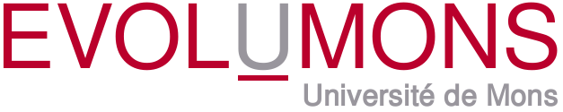
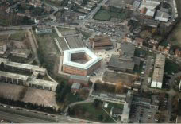
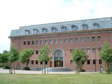

 2011 |
 |
 |
 |
{kind=link}
{kind=link}
Research Seminar on Software Evolution
Christopher Exton
Christopher Exton is lecturer with the Department of Computer Science and Information Systems at the University of Limerick, in Ireland. He worked extensively in the commercial software development field in a variety of different institutions including software houses, manufacturers and food retailers. His last industrial appointment before embarking on a PhD was as a senior technical consultant with ANZ Bank, Australia for a period of three years. His work in industry has included periods in Australia, Ireland and the UK. Comprehending programs is one of the core software engineering activities from early implementation to long-term software evolution. Software reuse, inspection, reverse engineering, migration, and reengineering of software systems all critically depend on program comprehension. Christopher is interested in the software tools, theories, cognitive models and strategies used by software engineers for software comprehension and how software tools can facilitate their understanding of software systems. One of the most challenging aspects of this research is the creation of suitable research methodologies that facilitate the comparison and evaluation of these tools and techniques.
Software Systems and Programmer Disorientation
[Download Presentation]Abstract of talk. A system of source code is generally quite large and exhibits a dense, complex and highly fragmented non-linear structure. The widespread application of advanced decomposition technologies available in modern programming languages in addition to structural phenomena such as control flow scatter (Chu-Carroll et al. 2003) and the tyranny of the dominant decomposition (Tarr et al. 1999) result in a trend whereby the implementation of conceptually coherent program operations and features is broken into a set of discrete source code fragments and elements. These units of code are then scattered over numerous disjoint documents and locations in the code space. Furthermore the linguistic references and semantic relationships connecting disjoint source code elements into a coherent implementation are generally dense and arbitrarily organized resulting in a complex irregular topology of information. Source code is also visually homogenous. Reflecting the unique structure, complexity and fragmentation exhibited by source code, the act of source code exploration is characterized by repeated switching between source code documents and elements, finding and re-finding relevant information, perusal of complex branching navigation paths, and synthesis of implementation from portions of code located as disjoint points throughout code space (Singer et al. 1997; Ko 17 et al. 2005). This talk will explore the issues of programmer disorientation and consider how some software tools might help address some of these issues.
Back to main page of EvolUMons 2011